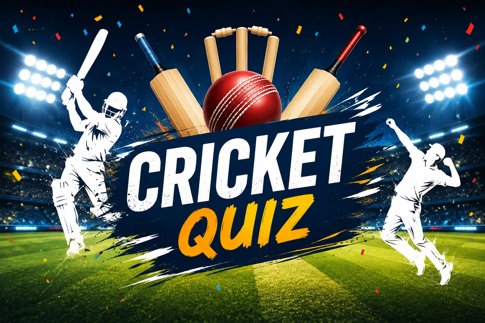

1. Whose scored the most runs for India in 2023 world cup
Answer in Capital letters

2. Which player scored the fastet double century in ODI cricket?
Answer in Capital letters
3. Who was the player of the tournament in 2014 T20 World Cup
Type the answers in capital letters
4. Who was the player of tournament in 2015 ODI world cup
Write in capital letters
5. Which IPL team has the record for getting all out on the lowest score.
Your options are-
(A)MI
(B)RCB
(C)DC
(D)LSG
Write option letter in capital
6. In 1912, a test match was held. One bowler got a hattrick across the two innings. Out of the three wickets, one batter was dismissed twice in the hat trick.
Write name of batsman in capital letters.